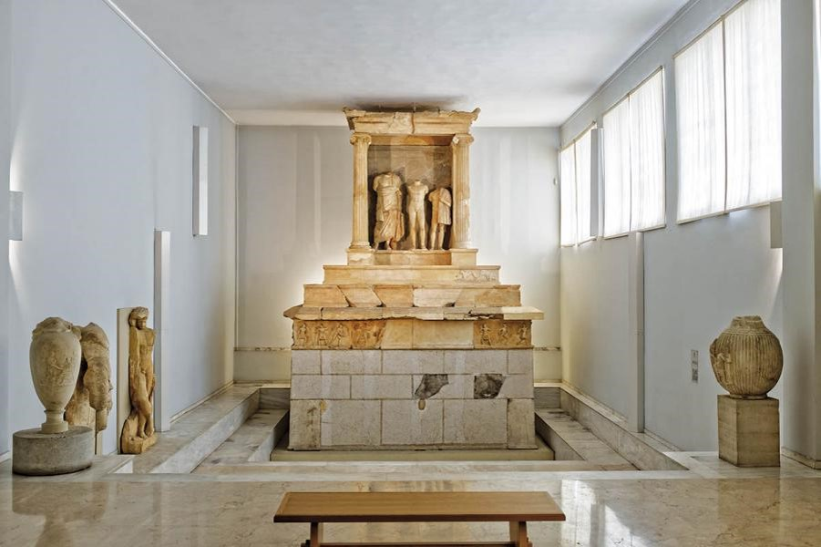

Το Αρχαιολογικό Μουσείο του Πειραιά προσφέρει στον επισκέπτη την αντιπροσωπευτική και πλήρη εικόνα της ιστορίας της πόλης, που κατά την αρχαιότητα γνώρισε μεγάλη ακμή τόσο ως εμπορικό κέντρο της ανατολικής Μεσογείου όσο και ως πολεμικός ναύσταθμος της αρχαίας Αθήνας. Το είδος των εκθεμάτων του, που προέρχονται κυρίως από την ευρύτερη περιοχή του Πειραιά και της αττικής παραλίας, και τα χρονικά όρια που καλύπτουν, από τη μυκηναϊκή έως και τη ρωμαϊκή εποχή, είναι αντιπροσωπευτικά της ιδιομορφίας, της σύνθεσης του πληθυσμού και της ιστορίας του Πειραιά. Οι συλλογές του μουσείου αποτελούνται κυρίως από ευρήματα ανασκαφών ή τυχαία ευρήματα και από παραδόσεις αρχαιοτήτων, ενώ έχουν εμπλουτισθεί και με τις δωρεές ιδιωτικών συλλογών, όπως της συλλογής Μελετοπούλου-Νομίδου και, πιο πρόσφατα, της Συλλογής Γερουλάνου. Το μουσείο στεγάζεται σε διώροφο κτήριο, που πλαισιώνει στη δυτική και νότια πλευρά το ελληνιστικό θέατρο της Ζέας και έχει συνολικό εμβαδόν 1.394 τ.μ. Οι εκθεσιακοί του χώροι καταλαμβάνουν τις δέκα αίθουσες των δύο ορόφων (1.044 τ.μ.), ενώ στο υπόγειο (350 τ.μ.) βρίσκονται τα εργαστήρια συντήρησης πήλινων, μεταλλικών και λίθινων αντικειμένων, καθώς και η αποθήκη του μουσείου, όπου φυλάσσονται αρχαιολογικά ευρήματα από την περιοχή του Πειραιά, την παραλιακή ζώνη και τα νησιά. Το κτήριο του παλαιού μουσείου (330 τ.μ.), που βρίσκεται ακριβώς δίπλα, χρησιμοποιείται σήμερα ως αποθήκη γλυπτών, ενώ στον αρχαιολογικό χώρο του θεάτρου της Ζέας πρόκειται να λειτουργήσει υπαίθρια έκθεση γλυπτών.
ΧΕΙΜΕΡΙΝΟ ΩΡΑΡΙΟ: 08:30-15:30 - Τρίτη κλειστά
KΑΛΟΚΑΙΡΙΝΟ ΩΡΑΡΙΟ: 08:30-17:00 - Τρίτη κλειστά
ΟΔΟΣ: ΧΑΡΙΛΑΟΥ ΤΡΙΚΟΥΠΗ 31 ΠΕΙΡΑΙΑΣ
ΤΗΛΕΦΩΝΟ: 0030 2104521598